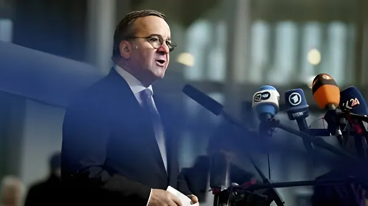

Ministre fédéral de la Défense depuis janvier 2023, le social-démocrate Boris Pistorius incarne à lui seul le tournant stratégique de l'Allemagne. Longtemps le politique le plus populaire du pays, il a transformé la Bundeswehr en chantier permanent : nouveau service militaire, budget en hausse historique, et une première stratégie militaire dévoilée le 22 avril 2026. Un homme à contre-courant du pacifisme traditionnel allemand, devenu le visage d'un pays qui apprend à se réarmer.
Né le 14 mars 1960 à Osnabrück, fils d'une députée sociale-démocrate, Boris Pistorius s'engage au SPD à l'âge de 16 ans. Après des études de droit, il gravit les échelons de la politique locale : conseiller municipal, puis bourgmestre d'Osnabrück à partir de 2006. En 2013, il quitte la mairie pour devenir ministre de l'Intérieur de Basse-Saxe, poste qu'il occupe pendant dix ans. Son domaine de prédilection est alors la sécurité intérieure, non la défense nationale.
C'est en janvier 2023, après la démission de Christine Lambrecht, qu'il est appelé à la tête du ministère fédéral de la Défense. Un choix surprise, qui s'avérera décisif : cet homme sans passé militaire va devenir l'architecte du réarmement allemand, au moment où la guerre en Ukraine rebat toutes les cartes de la sécurité européenne.
Dès sa prise de fonctions, Pistorius impose un vocabulaire inédit dans l'Allemagne d'après-guerre : la Bundeswehr doit redevenir kriegstüchtig — « apte au combat ». Le terme provoque un choc dans l'opinion, habituée à soixante-dix ans de culture militaire discrète et de pacifisme constitutionnel. Pistorius l'assume pleinement, répétant que la Russie prépare une confrontation avec l'OTAN d'ici cinq à huit ans.
Cette rhétorique est une rupture avec tous ses prédécesseurs. Là où les ministres de la Défense allemands évitaient soigneusement toute référence à la guerre, Pistorius nomme la menace explicitement : la Russie est désignée comme « la menace immédiate la plus grave » pour l'Allemagne et l'espace euro-atlantique dans la nouvelle stratégie militaire publiée en avril 2026.
Nomination de Pistorius comme ministre fédéral de la Défense, en remplacement de Christine Lambrecht. Il hérite d'une Bundeswehr sous-financée depuis des décennies.
Pistorius déclare que les pays européens doivent « se préparer à la guerre » face à la Russie, évoquant un risque dans « cinq à huit ans ». Vive polémique en Allemagne.
Présentation du projet de « nouveau service militaire » : questionnaire obligatoire pour les jeunes hommes de 18 ans, volontaire pour les femmes. Le projet n'est pas voté avant la chute du gouvernement Scholz.
Pistorius renonce à se porter candidat à la chancellerie, malgré sa popularité record dans les sondages. Il laisse la voie libre à Olaf Scholz au sein du SPD.
Adoption de la loi sur le « nouveau service militaire modernisé ». Entrée en vigueur début 2026 : questionnaire obligatoire pour les hommes, facultatif pour les femmes.
Pistorius présente la première stratégie militaire de l'histoire de la Bundeswehr : objectif 460 000 soldats d'ici 2035, Russie désignée menace principale, ambition d'être la première armée conventionnelle d'Europe.
La principale bataille de Pistorius est budgétaire. Longtemps bridée par le Schuldenbremse (frein à l'endettement inscrit dans la Constitution), la Bundeswehr voyait ses crédits stagner. La réforme constitutionnelle de mars 2025, adoptée par le Bundestag sortant juste avant les élections, change la donne : les dépenses de défense sont désormais exemptées des règles de déficit.
Pour 2026, la Bundeswehr dispose d'un budget total de 108,2 milliards d'euros — soit 82,7 milliards en budget ordinaire auxquels s'ajoutent 25,5 milliards prélevés sur le fonds spécial. À titre de comparaison, le budget des armées françaises atteint 57,2 milliards d'euros, sans financer de dissuasion nucléaire. L'objectif affiché est d'atteindre 3,5 % du PIB consacré à la défense d'ici 2029.
| Indicateur | 2024 | 2026 |
|---|---|---|
| Budget défense total | ~62 Md€ | 108,2 Md€ |
| Effectifs actifs | ~181 000 | 185 000 (hausse en cours) |
| Objectif effectifs 2035 | — | 260 000 (actifs) + 200 000 (réserve) |
| Candidatures Bundeswehr | — | +20 % (début 2026) |
| Munitions (budget 2026) | — | ~15 Md€ |
En présentant la Gesamtkonzeption der militärischen Verteidigung le 22 avril 2026, Pistorius marque un tournant symbolique : c'est la toute première stratégie militaire formelle de l'histoire de la Bundeswehr. Depuis 1969 et jusqu'en 2016, les ministres se contentaient de « livres blancs » périodiques. La nouvelle doctrine va plus loin : elle fixe des objectifs de force, désigne l'ennemi, et décrit des scénarios de conflit contre l'OTAN.
La stratégie repose sur trois piliers : renforcement des capacités défensives à court terme, montée en puissance à moyen terme dans tous les domaines, et supériorité technologique à long terme (cyber, espace, drones, informatique quantique). Elle insiste également sur l'effacement des frontières entre civil et militaire : la société entière est concernée par la dissuasion, y compris face aux opérations hybrides russes.
« La bedrohungslage passe avant la kassenlage. » — La situation sécuritaire prime sur la situation budgétaire.
— Boris Pistorius, Bundestag, mai 2025« Pour la première fois dans l'histoire de la Bundeswehr, nous adoptons une stratégie militaire — et il y a de bonnes raisons à cela. »
— Boris Pistorius, conférence de presse, Berlin, 22 avril 2026Dans un paysage politique où Friedrich Merz peine à convaincre — moins de 30 % de satisfaction selon les sondages de l'ARD en août 2025 —, Boris Pistorius reste le politique le plus apprécié d'Allemagne, devant le chancelier lui-même. Cette popularité s'explique en partie par sa lisibilité : là où Merz zigzague entre austérité et relance, Pistorius impose un cap clair depuis plus de deux ans. Son refus de se présenter à la chancellerie en novembre 2024, au moment où les sondages lui donnaient toutes les chances, a paradoxalement renforcé son image d'homme de conviction plutôt que d'ambition. Il reste la figure centrale du réarmement allemand — et, aux yeux d'une Europe de plus en plus préoccupée par sa propre sécurité, l'un des architectes d'un ordre nouveau sur le continent.
Seit Januar 2023 Bundesverteidigungsminister, verkörpert der Sozialdemokrat Boris Pistorius den strategischen Wandel Deutschlands. Lange der beliebteste Politiker des Landes, hat er die Bundeswehr in eine permanente Baustelle verwandelt: neuer Wehrdienst, historisch gestiegenes Budget und eine erstmals vorgelegte Militärstrategie am 22. April 2026. Ein Mann gegen den pazifistischen Strom Deutschlands, der zum Gesicht eines Landes geworden ist, das wieder aufrüstet.
Geboren am 14. März 1960 in Osnabrück, Sohn einer SPD-Landtagsabgeordneten, tritt Boris Pistorius mit 16 Jahren in die Partei ein. Nach einem Jurastudium steigt er die politischen Stufen der Kommunalpolitik empor: Stadtrat, dann Oberbürgermeister von Osnabrück ab 2006. 2013 verlässt er das Rathaus, um Innenminister von Niedersachsen zu werden — ein Amt, das er zehn Jahre innehat. Seine Domäne ist die innere Sicherheit, nicht die Landesverteidigung.
Erst im Januar 2023, nach dem Rücktritt von Christine Lambrecht, wird er ans Bundesverteidigungsministerium berufen. Eine überraschende Wahl, die sich als entscheidend erweist: Dieser Mann ohne militärische Vergangenheit wird zum Architekten der deutschen Aufrüstung, zu dem Zeitpunkt, an dem der Ukrainekrieg alle Karten der europäischen Sicherheit neu mischt.
Gleich nach seinem Amtsantritt setzt Pistorius ein im Nachkriegsdeutschland bislang ungehörtes Vokabular durch: Die Bundeswehr müsse wieder kriegstüchtig werden. Der Begriff löst einen Schock in der Öffentlichkeit aus, die sieben Jahrzehnte diskrete Militärkultur und Verfassungspazifismus gewohnt ist. Pistorius steht dazu und wiederholt, dass Russland in fünf bis acht Jahren eine Konfrontation mit der NATO anstrebe.
Diese Rhetorik ist ein Bruch mit allen seinen Vorgängern. Wo deutsche Verteidigungsminister den Begriff Krieg sorgfältig mieden, benennt Pistorius die Bedrohung explizit: Russland wird als „die unmittelbarste Bedrohung" für Deutschland und den euro-atlantischen Raum in der im April 2026 veröffentlichten Militärstrategie bezeichnet.
Ernennung zum Bundesverteidigungsminister als Nachfolger von Christine Lambrecht. Er übernimmt eine Bundeswehr, die seit Jahrzehnten unterfinanziert ist.
Pistorius erklärt, europäische Länder müssten sich angesichts Russlands auf einen Krieg vorbereiten — innerhalb von fünf bis acht Jahren. Heftige Debatte in Deutschland.
Vorstellung des Entwurfs zum „neuen Wehrdienst": Pflicht-Fragebogen für 18-jährige Männer, freiwillig für Frauen. Das Gesetz wird vor dem Ende der Scholz-Regierung nicht mehr verabschiedet.
Pistorius verzichtet auf eine Kanzlerkandidatur, trotz Umfragerekordzustimmung. Er lässt Olaf Scholz innerhalb des SPD den Vortritt.
Verabschiedung des Gesetzes über den modernisierten Wehrdienst. Tritt Anfang 2026 in Kraft: Pflicht-Fragebogen für Männer, freiwillig für Frauen.
Pistorius stellt die erste Militärstrategie der Bundeswehrgeschichte vor: Ziel von 460 000 Soldaten bis 2035, Russland als Hauptbedrohung, Ambition der ersten konventionellen Armee Europas.
Pistorius' wichtigster Kampf ist haushaltspolitischer Natur. Lange durch die Schuldenbremse gebunden, stagnierte die Bundeswehr finanziell. Die Verfassungsreform vom März 2025, vom scheidenden Bundestag knapp vor den Wahlen verabschiedet, ändert alles: Verteidigungsausgaben sind fortan von den Schuldenregeln ausgenommen.
Für 2026 verfügt die Bundeswehr über einen Gesamthaushalt von 108,2 Milliarden Euro — 82,7 Milliarden regulär, plus 25,5 Milliarden aus dem Sondervermögen. Zum Vergleich: Das französische Verteidigungsbudget beläuft sich auf 57,2 Milliarden Euro, ohne Nuklearabschreckung zu finanzieren. Das erklärte Ziel ist es, bis 2029 3,5 % des BIP für die Verteidigung aufzuwenden.
| Kennzahl | 2024 | 2026 |
|---|---|---|
| Gesamtverteidigungshaushalt | ~62 Mrd€ | 108,2 Mrd€ |
| Aktive Soldaten | ~181 000 | 185 000 (steigend) |
| Zielstärke 2035 | — | 260 000 (aktiv) + 200 000 (Reserve) |
| Bewerbungen Bundeswehr | — | +20 % (Anfang 2026) |
| Munitionsbudget 2026 | — | ~15 Mrd€ |
Mit der Vorstellung der Gesamtkonzeption der militärischen Verteidigung am 22. April 2026 setzt Pistorius einen symbolischen Meilenstein: Es ist die allererste formale Militärstrategie in der Geschichte der Bundeswehr. Von 1969 bis 2016 begnügten sich die Minister mit periodischen „Weißbüchern". Die neue Doktrin geht weiter: Sie legt Kräfteziele fest, benennt den Feind und beschreibt Konfliktszenarien gegen die NATO.
Die Strategie ruht auf drei Säulen: Stärkung der Verteidigungskapazitäten kurzfristig, Ausbau in allen Bereichen mittelfristig und technologische Überlegenheit langfristig (Cyber, Weltraum, Drohnen, Quantencomputing). Sie betont auch das Verwischen der Grenzen zwischen Zivil und Militär: Die gesamte Gesellschaft ist von der Abschreckung betroffen, auch gegenüber russischen Hybridoperationen.
„Die Bedrohungslage geht vor Kassenlage." — Die Sicherheitslage hat Vorrang vor dem Haushalt.
— Boris Pistorius, Bundestag, Mai 2025„Zum ersten Mal in der Geschichte der Bundeswehr verabschieden wir eine Militärstrategie — und dafür gibt es gute Gründe."
— Boris Pistorius, Pressekonferenz, Berlin, 22. April 2026In einem politischen Umfeld, in dem Friedrich Merz kaum zu überzeugen vermag — laut ARD-Umfragen vom August 2025 weniger als 30 % Zustimmung —, bleibt Boris Pistorius der beliebteste Politiker Deutschlands, noch vor dem Bundeskanzler selbst. Diese Popularität erklärt sich teils durch seine Klarheit: Wo Merz zwischen Sparsamkeit und Konjunkturstimulus schwankt, hält Pistorius seit mehr als zwei Jahren einen klaren Kurs. Sein Verzicht auf eine Kanzlerkandidatur im November 2024, als ihn alle Umfragen als Favoriten sahen, hat paradoxerweise sein Image als Mann der Überzeugung gestärkt. Er bleibt die zentrale Figur des deutschen Rüstungsaufschwungs — und für ein Europa, das seiner eigenen Sicherheit zunehmend Priorität einräumt, einer der Architekten einer neuen Ordnung auf dem Kontinent.